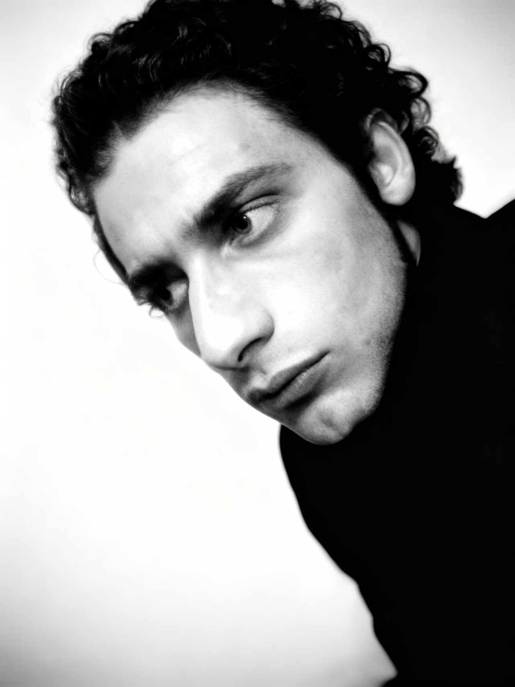

Demis Lupi
Artista formatosi presso l'Accademia di Belle Arti di Brera a Milano sotto la guida di Alberto Garutti, Demis Lupi sviluppa un linguaggio pittorico che integra tecniche tradizionali con strumenti digitali.
La sua ricerca artistica esplora il vissuto umano, le sue relazioni e le pieghe più intime del pensiero, attraverso un linguaggio archetipo universale e spirituale. Il colore vi assume un ruolo fondamentale, energia vitale che ci identifica e segna i punti cardinali dell'essere, ponte arcano tra il visibile e l'inesprimibile, ancorato all'osservazione diretta.
Evita deformazioni formali preferendo tagli fotografici e composizioni studiate, come testimoniato dalle esposizioni Brand New Talent (Palazzina Liberty, Milano 2003), Ecodesign (Brera 2004) e dal film Saveart: Recycling Art.
La sperimentazione continua attraverso la pittura e le tecnologie digitali.